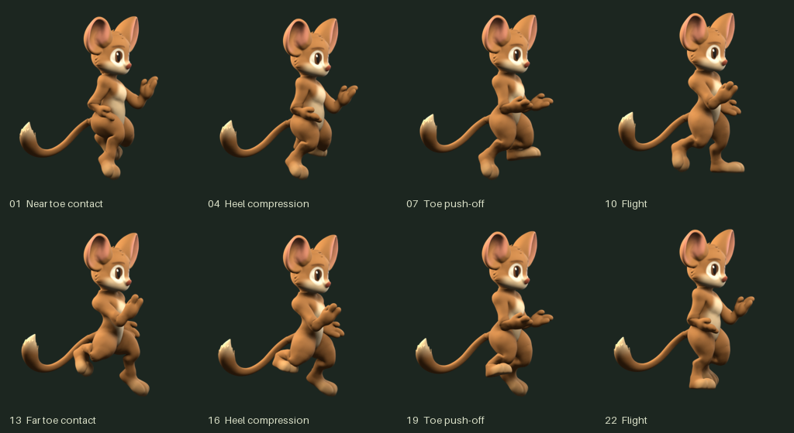

Zebes / Accepted storybook mouse / Run 02
A quicker, toe-led run
The accepted character, animated from its saved Blender master. One fixed camera and ground plane throughout. Compare two samplings of the same half-second cycle.
512px master24 samples · 48 fps
● Near / left ● Far / right ● Planted toe pad
Full sampling24 frames · 48 fps
12-sample comparison12 frames · 24 fpsBoth play at the same cadence: four steps per second. The 12-sample view holds every other full frame. Arrow keys step; space pauses. Small previews retain RGBA color without a new palette treatment.
Run verdict pending. The accepted neutral master remains unchanged.
Eight key poses

Contact and export measurements